Day 36｜馬德里、從一個零公里到另一個零公里
2026 年 6 月 25 日 · Santiago → Madrid · 高鐵北上
昨晚火把節的狂歡，今天終於不用再趕著日出出發了。在庇護所手寫下最後的感動，再次漫步來到聖地牙哥大教堂廣場。坐下來好好吃頓早餐：煎蛋、鬆餅、吐司配啤酒——風裡除了咖啡香，還多了一點離別的味道。享受這慵懶的步調，靜靜把這座城市的氣息深深記住。
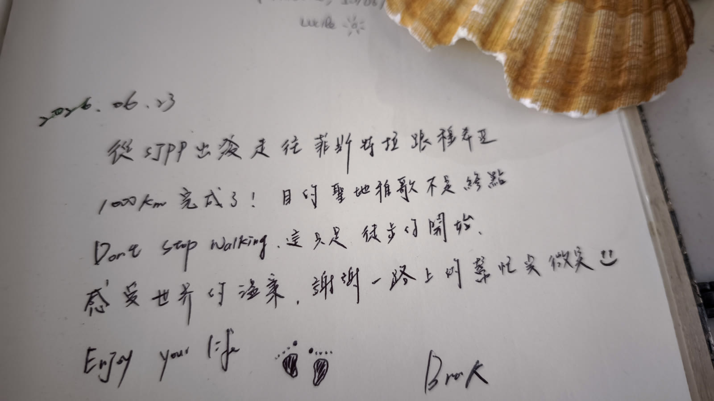
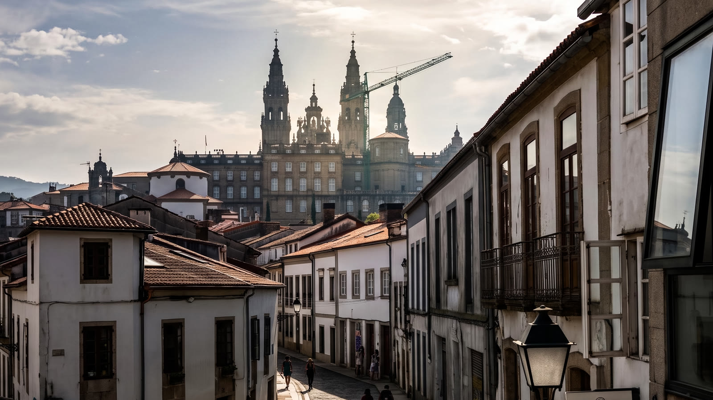
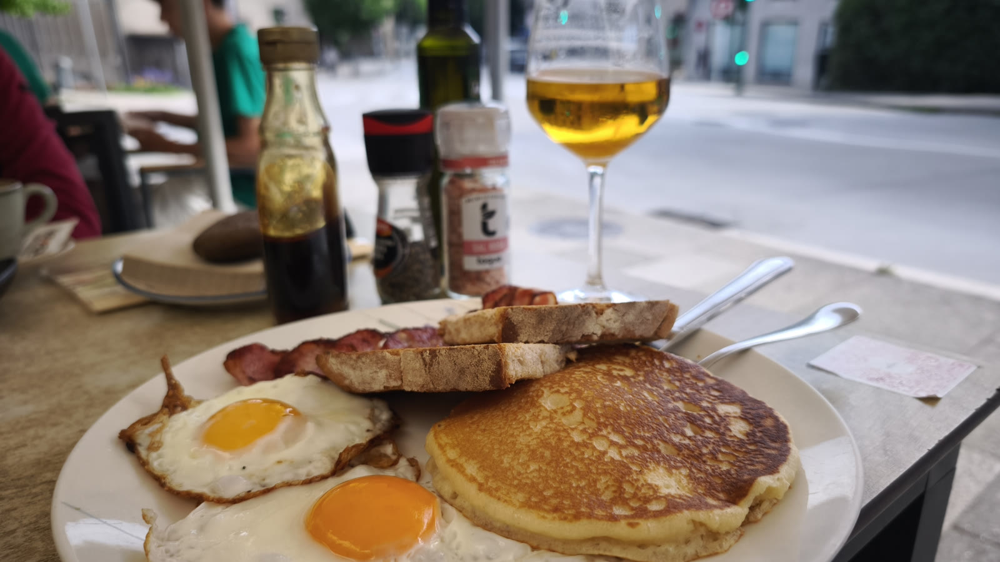
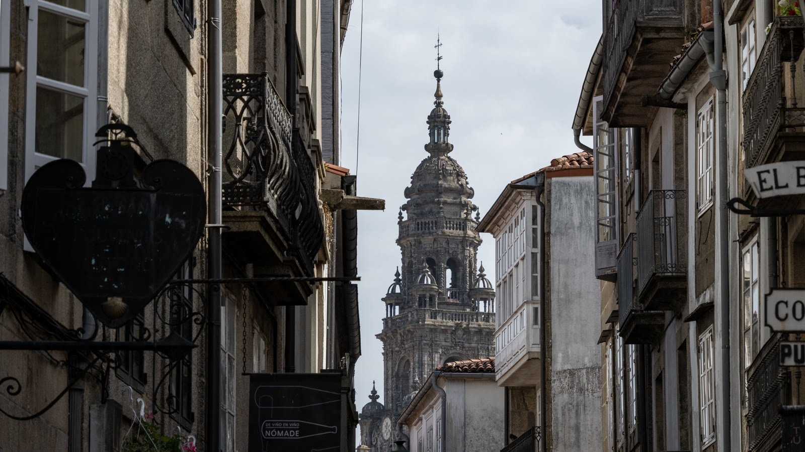
告別聖地牙哥，搭上開往馬德里的高鐵。隨著窗外風景飛速倒退，抬頭一看，車速越來越快，溫度竟然也一路狂飆到了 38 度！看來馬德里也正在經歷熱浪。
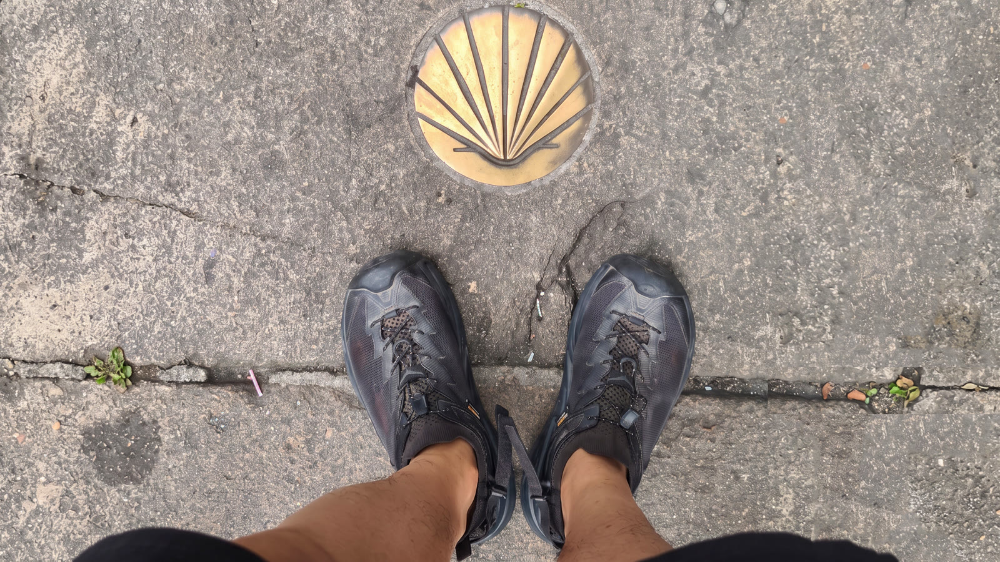
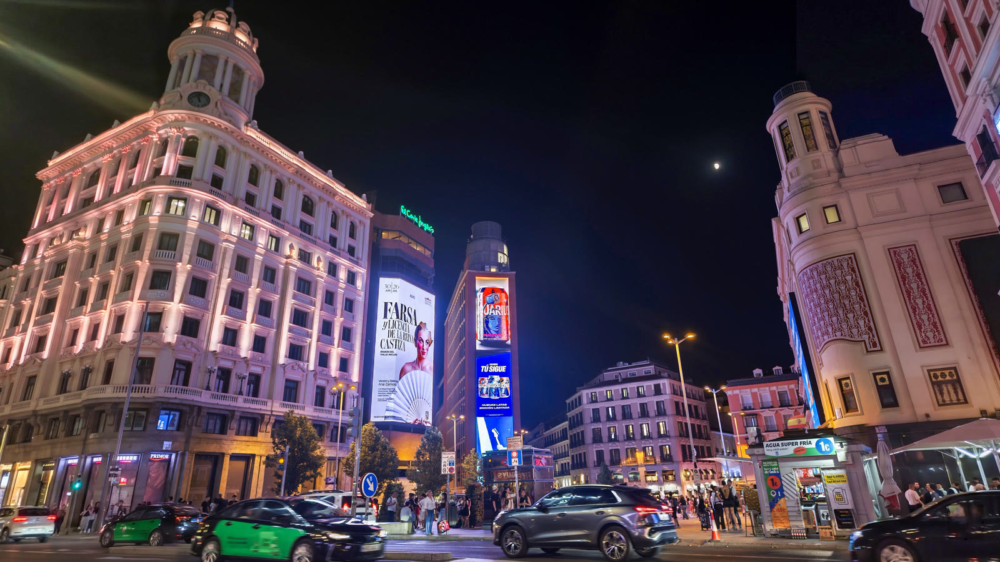
出了高鐵，立刻切換到馬德里錯綜複雜的地鐵系統。作為西班牙首都，這裡擁有全歐洲最龐大、歷史超過百年的地下交通網。習慣了過去一個月「只要跟著黃色箭頭走」的單純日子，突然被丟回這個沒有導航絕對會迷路的地下迷宮，還真的有點不習慣。
為了明天一早的班機，今晚入住機場旁的 HOSTELFLY。這間旅館超酷，竟然自帶露天小泳池，抬頭就能看見準備降落的飛機從頭頂飛過。
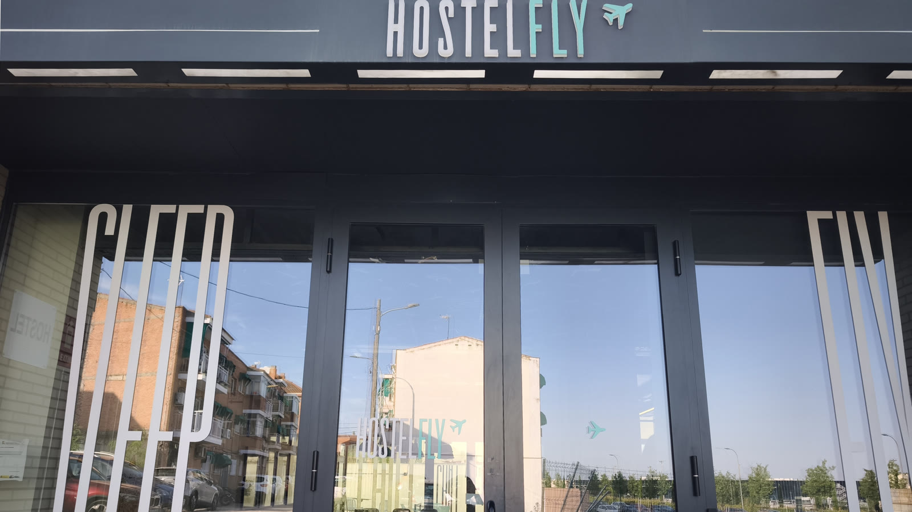
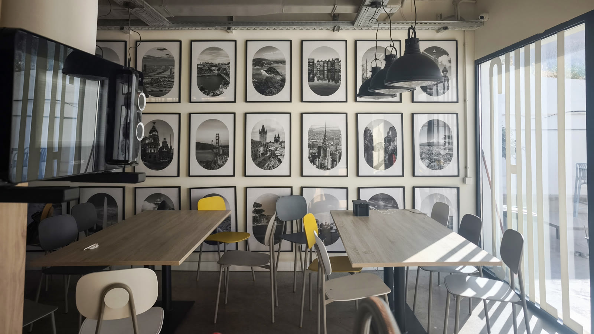
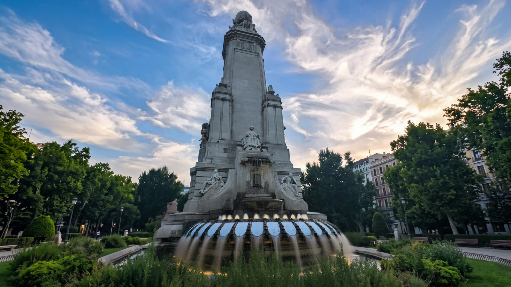
放下背包，開始城市探索。第一站來到著名的「西班牙廣場」——這座浮誇的紀念碑，獻給了塞萬提斯，以及騎著瘦馬的唐吉訶德。一個沉迷騎士夢的老翁，把風車當成邪惡巨人，義無反顧地舉矛衝鋒。哪怕被現實打得落花流水，他心中的騎士之道，從未動搖。來到馬德里，一定要來看看這位最浪漫的傻瓜騎士。
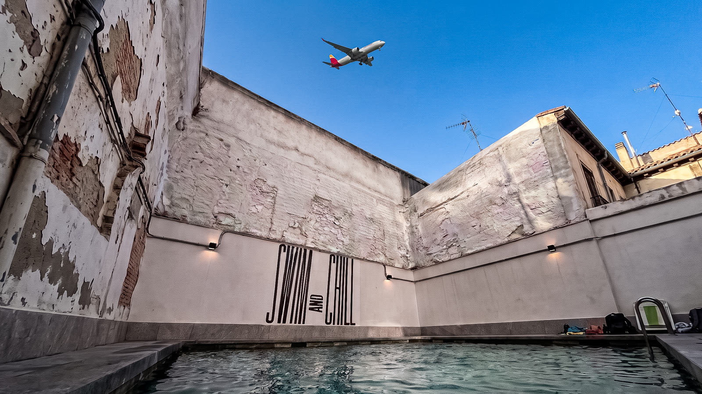
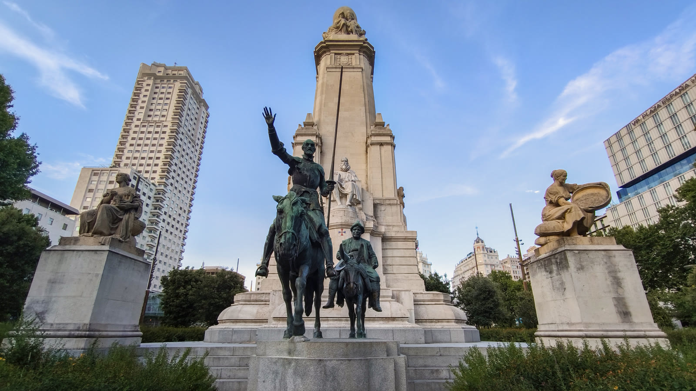
馬德里的市區處處是驚喜，轉個彎就遇見了兩千多年歷史的古埃及「德波神廟」——這是埃及為了感謝西班牙拯救古蹟，直接整座搬遷過來的禮物。站在全馬德里最美的夕陽觀景點，看著金黃落日漸漸沉入地平線，大家紛紛舉起手機，記錄這份無價的浪漫。
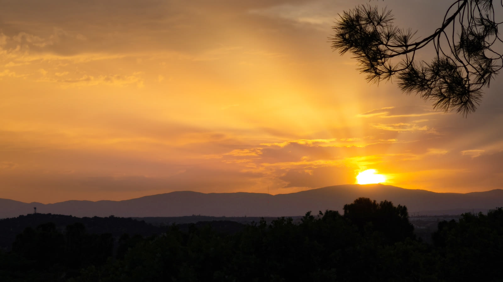
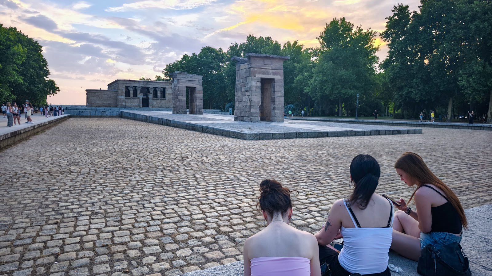
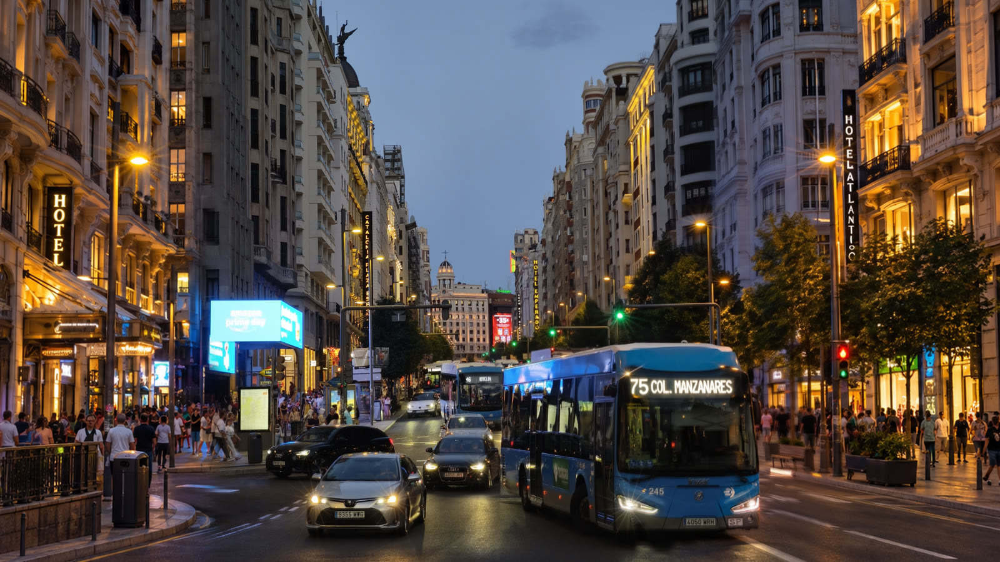
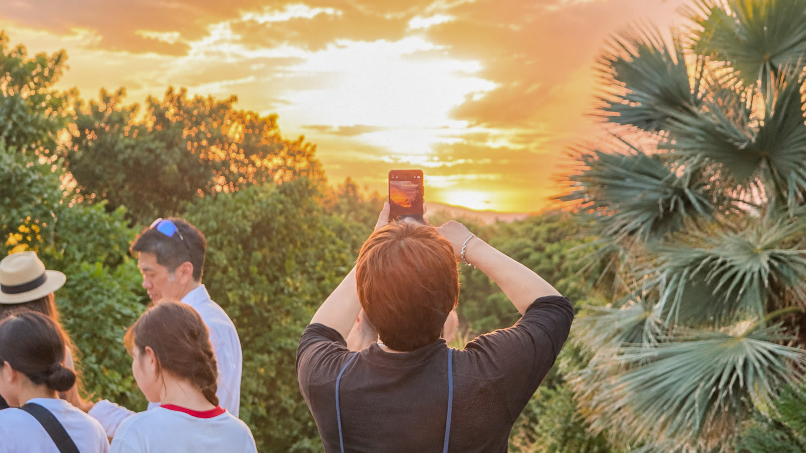
夜幕低垂，馬德里的街頭才正要開始熱鬧。漫步在「馬德里百老匯」的格蘭大道上，兩旁是百年建築與霓虹燈光交織出的繁華夜色。就在廣場中央，一場活力四射的街舞正在上演——直接帶大家感受一下西班牙最道地的奔放與熱情！
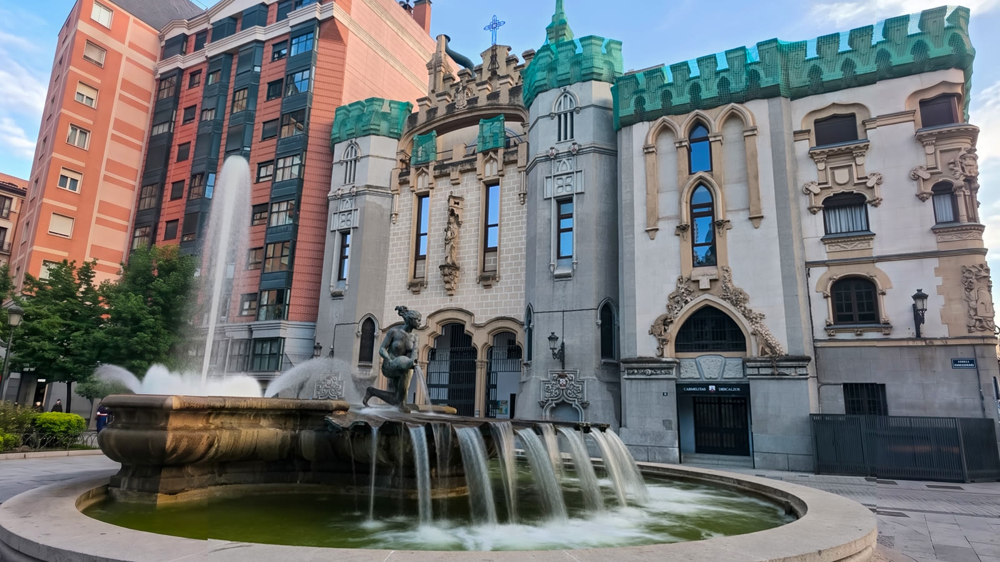
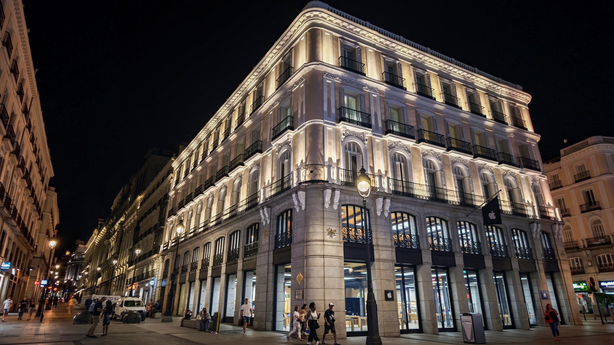
接著來到馬德里的中心——「太陽門廣場」。這裡不僅是跨年倒數的聖地，更是整個西班牙公路網的「零公里」起點。站在這個原點，回想這三十幾天、一千多公里的路程：從一個零公里，走到另一個零公里。朝聖之路雖然結束了，但人生旅途，才剛剛開始。
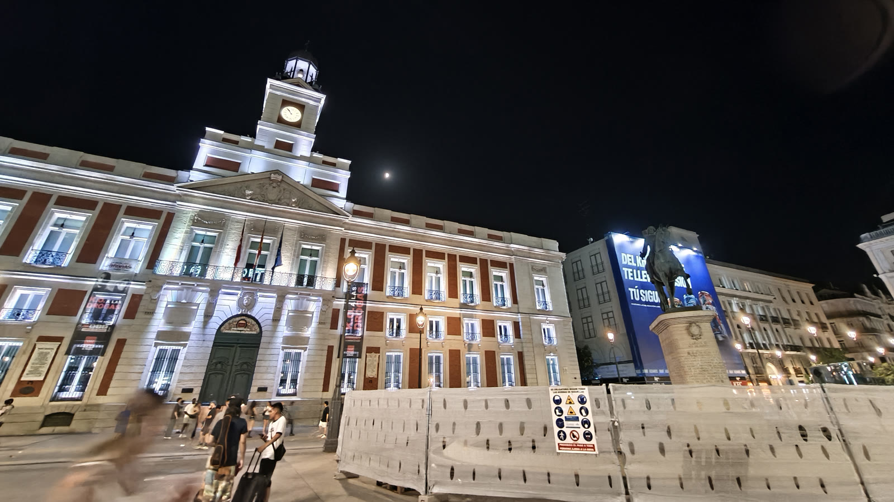

📚 朝聖者小百科：太陽門與零公里
太陽門廣場（Puerta del Sol）是馬德里的中心，地上那塊「零公里」（Kilómetro Cero）牌子，是全西班牙公路里程的起點——就像 Fisterra 與 Muxía 的 0km 石碑，是另一種意義的原點。從世界盡頭的 0km，走到西班牙公路網的 0km，這趟旅程從原點開始，也在原點暫停。
🐻 太陽門必拍：熊與莓樹雕像（馬德里市徽）、零公里地磚
🚇 地鐵百年迷宮請備好離線地圖，別再指望黃色箭頭了
| 機場捷運 | €3.0 |
| 西班牙免稅香水×2 | €39.8 |
| 星巴克馬克杯 | €18.8 |
| 巧克力×3 | €26.4 |
| 合計 | €88.0 |
🎬 對應 Vlog EP9｜完結篇：爸，我做到了！徒步1000公里抵達終點Muxía 0KM、馬德里巡禮